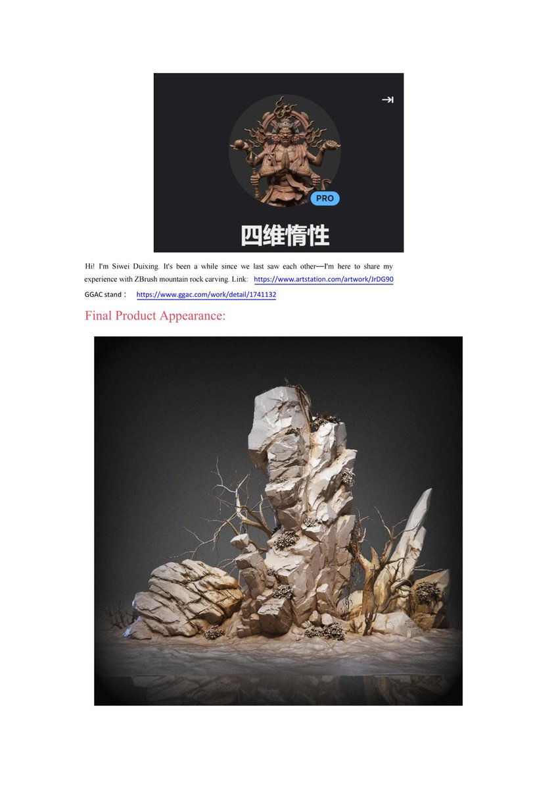
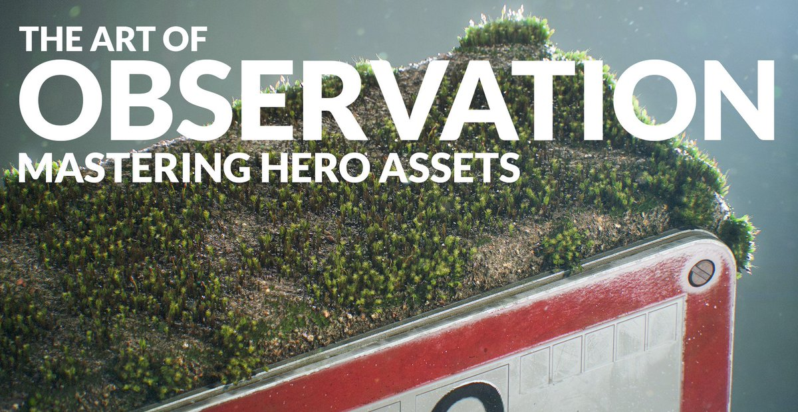
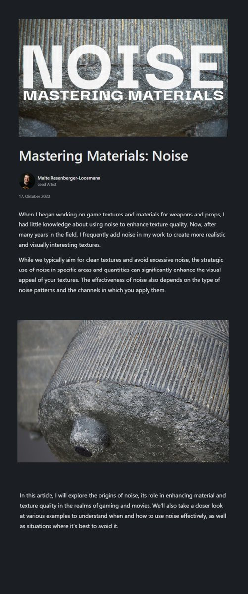

記事・リンクを検索
⌘K
Tutorial / Pipeline/Plugin/Tool / Article / Showreel/Demoreel / Website / Tips / 毎日作品分析の7カテゴリで整理しています。
直近で追加・更新したキュレーション記事です。
ComfyUIの拡張機能「ComfyUI-OCIO」。

3D Environment Artistの四维惰性氏による記事「Rock and Stone Concept」。長年の経験に基づく岩のスカルプトアプローチを、シルエット・バランス・構図の観点から詳しく解説している。

Houdini内でプロシージャルに植生を生成できるツールキット「Natsura」。インポート/エクスポートの手間がなく高品質で、いわば「SpeedTreeのHoudini完結版」だとしている。KTT（Gaea相当）同様、Houdini内で完結するツールが増えている傾向にも触れている。

Malte Resenberger-Loosmann氏による記事「The Art of Observation: Mastering Hero Assets」。現実世界のリファレンスの観察・分析からマテリアルレイヤーの見極め、3Dへのディテール落とし込みまでのアプローチが述べられている。

Malte Resenberger-Loosmann氏のページにある他の記事。「Mastering Materials: Noise」「Breakdown Rust Material」「The 10 Layers Strategy」「Desert Eagle」など、マテリアル制作の知見がまとめられている。

Naughty DogのSenior Environment Artistによるウェブサイト。UEなどの無料チュートリアルが見られるほか、Gnomon Workshopでも2つのチュートリアルを公開している。
Xのタイムラインに流さず、必要な時に見返せる形で新着エントリーをお届け。